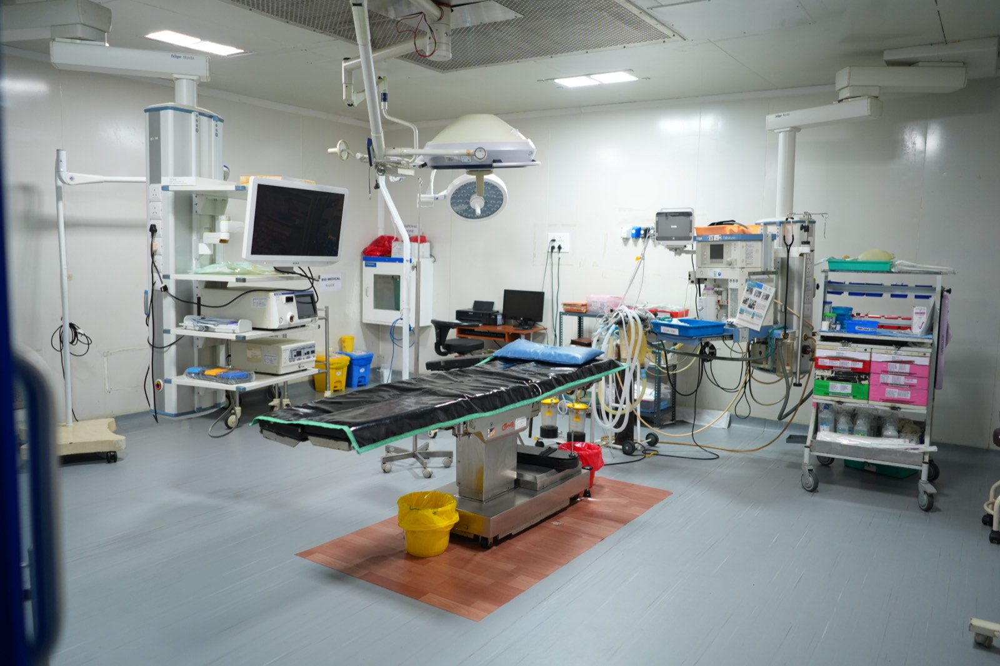
Division 01General & Laparoscopic Surgery
Advanced minimally-invasive and open surgery led by Dr. S. Sasiraj — from hernia, gallbladder and appendix to complex abdominal procedures, with quicker recovery.
Explore surgeriesSudar Hospital & Research Institute is one of Thanjavur's most distinguished surgical centres — led by Dr. S. Sasiraj (MS, DNB), pioneer of laparoscopic surgery in the region, delivering safe, high-quality care across general & laparoscopic surgery, ophthalmology and 24×7 dialysis.

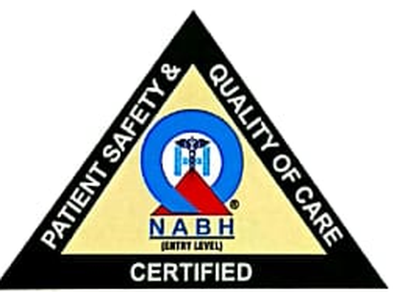
NABH Accredited
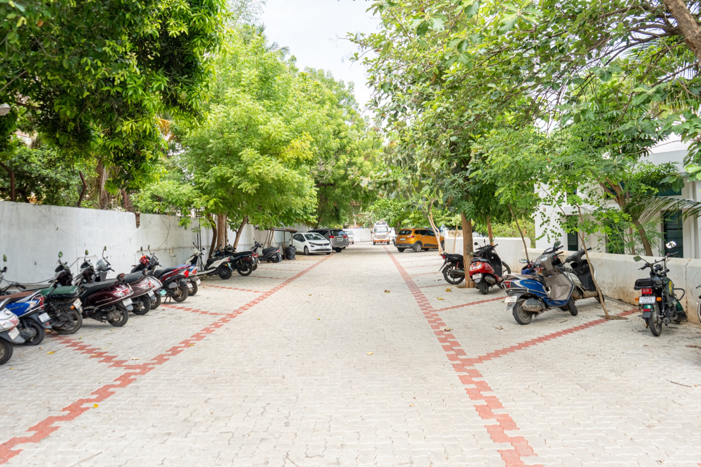
Founded in 2007 by a reputed surgeon and son of the soil, Dr. S. Sasiraj (MBBS, MS, DNB), Sudar Hospital grew into Sudar Hospital And Research Institute. Today it stands as one of the most distinguished multispecialty surgical centres in Thanjavur, providing the most advanced surgical services.
Alongside general and laparoscopic surgery, we offer dedicated dialysis and ophthalmology services — delivering high quality patient care and safety while adhering to stringent infection prevention and control standards.
The vision, mission and values that shape every decision we make for the patients who trust us with their care.
To become a Multi Specialty Surgical centre with state-of-the-art facilities and international standards, providing each healthcare seeker a sense of contentment and peace through compassionate care, commitment and responsibility in work.
சர்வதேசத் தரத்தில், அதிநவீன வசதிகள் கொண்ட மல்டி ஸ்பெஷாலிட்டி அறுவைச் சிகிச்சை மையமாகத் திகழ வேண்டுமென்ற நோக்கத்தில், ஆரோக்கியத்தை நாடும், ஒவ்வொருவருக்கும், பணியில் பரிவான சேவையை அர்ப்பணிப்புடனும், பொறுப்புணர்வுடனும் வழங்கி அவர்களை மனநிறைவையும் சாந்தியையும் உணரச் செய்தலே எங்கள் தொலைநோக்கு ஆகும்.
To provide general, laparoscopic and day-care surgeries for patients in rural South India with the highest standards of safety and quality, minimal length of stay, and in a cost-effective manner.
சிகிச்சை தேவைப்படுகின்றவர்களுக்கு பொதுவான மற்றும் லேப்ராஸ்கோப்பி அறுவைச் சிகிச்சைகள் மற்றும் டே-கேர் அறுவைச் சிகிச்சை ஆகியவற்றை தென்னிந்தியாவில் கிராமப்புறங்களில், பாதுகாப்பான மற்றும் தரமான முறையில் குறைவான நாட்களே மருத்துவமனையில் தங்கியிருந்து, குறைந்த செலவில் சிகிச்சை அளித்தலே எங்கள் குறிக்கோள்.
In all our services, activity, decision and interaction, we at Sudar Hospital are constantly driven by the following values.
Sudar Hospital And Research Institute brings together surgical, ophthalmic and nephrology care under a single, integrated roof.

Division 01Advanced minimally-invasive and open surgery led by Dr. S. Sasiraj — from hernia, gallbladder and appendix to complex abdominal procedures, with quicker recovery.
Explore surgeries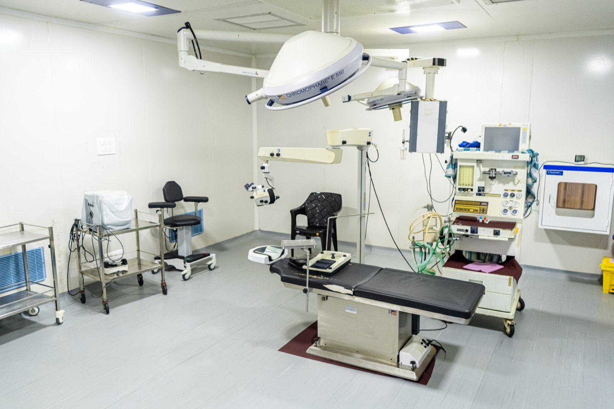
Division 02Led by Dr. G. Rohini — state-of-the-art phacoemulsification cataract surgery, glaucoma management and diabetic retinopathy evaluation, plus free eye camps every Thursday.
Explore eye care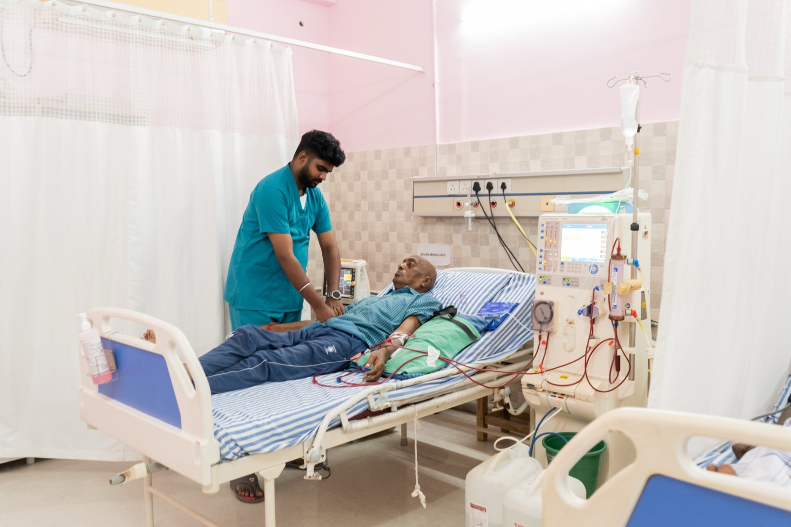
Division 033 dialysis machines running 24 hours with compassionate, patient-centred care and best-practice infection control. Empanelled with CMCHIS insurance.
Explore dialysisA full spectrum of surgical specialities supported by modern diagnostics, in-house pharmacy and round-the-clock critical care.
Laparoscopic cholecystectomy, hernioplasty, appendicectomy, thyroidectomy, haemorrhoidectomy and more.
Phacoemulsification cataract surgery, glaucoma care and diabetic retinopathy evaluation.
24×7 dialysis, AV fistula creation and central line insertion with strict infection control.
Trauma, fracture care and joint procedures supported by modern imaging and theatre facilities.
URS, TURP, PCNL and stent removal — endoscopic management of stones and prostate.
Laparoscopic gynaecological procedures including Laparoscopic Assisted Vaginal Hysterectomy, ovarian cystectomy and sterilisation.
Pre & post-operative care instructions for our surgical patients, plus everyday precautions for diabetic foot and kidney care — available in English and Tamil.
Accredited since 2017 — a long-standing commitment to healthcare quality and patient safety.
CAHO ACE-CSSD and iCOMPLY certified — uncompromised sterility for every instrument.
Empanelled with CMCHIS, making advanced surgical care affordable and accessible.
Minimally-invasive surgery with minimal length of stay — back to your life, faster.
Free outpatient eye check-ups every Thursday for the underprivileged community.
Lab, CT, X-ray, ECG, ECHO, TMT, Ultrasound and pharmacy — complete care under one roof.
Experienced surgeons and consultants committed to compassionate, responsible care.

MBBS, MS, DNB — General & Laparoscopic Surgeon

MBBS

MBBS, D.O., DNB

MD, DNB (Nephrology)

MD (Anaes) — Dept. of Anaesthesiology
Procedures most frequently performed at Sudar Hospital And Research Institute between 2017 and 2025 — a record built on repetition, refinement and consistently safe outcomes.
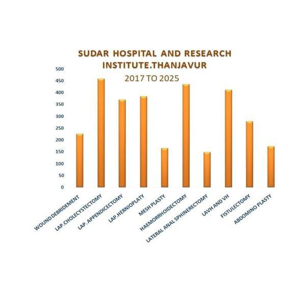
Laparoscopic cholecystectomy leads our theatre list, followed closely by haemorrhoidectomy and hysterectomy — the minimally-invasive procedures our surgical team performs day in, day out.
Accredited four times since 2017 — a long-standing commitment to healthcare quality and patient safety.
Since 2017CAHO ACE-CSSD certified twice consecutively — uncompromised sterility for every instrument.
2023–2025 & 2026–2028Certified by CAHO for Infection Prevention & Control and Antimicrobial Stewardship compliance.
2026–2028Registered with the Govt. of Tamil Nadu as a 34-bed multi-speciality allopathic establishment.
Valid to 2029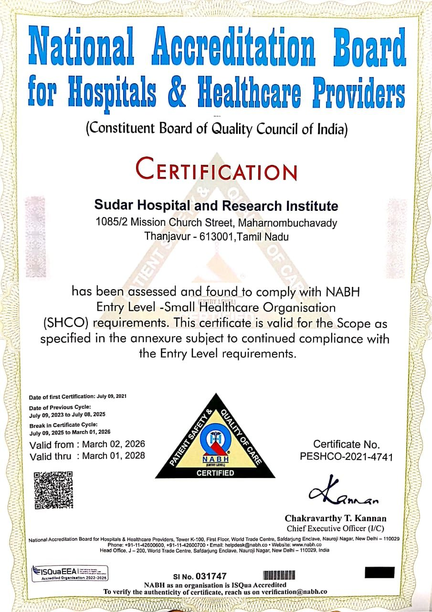
NABH AccreditationEntry-Level SHCO · Valid to March 2028 View certificate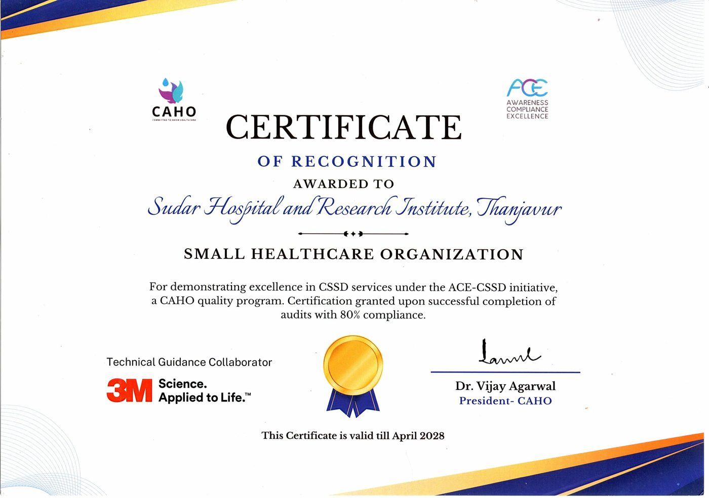
ACE-CSSD — CAHOSterilisation Excellence · Valid to April 2028 View certificate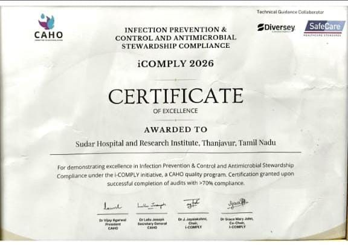
iCOMPLY 2026 — CAHOInfection Prevention & Control · 2026–2028 View certificate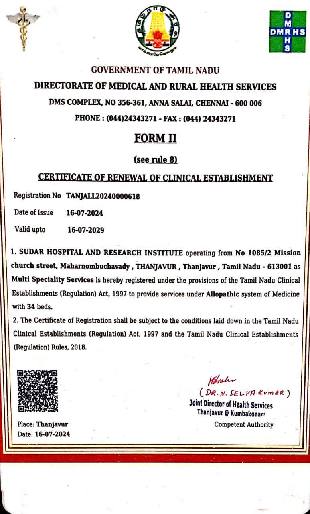
Clinical Establishment ActGovt. of Tamil Nadu · Valid to July 2029 View certificateEmpanelled with CMCHIS and leading insurance providers & TPAs — for smooth, cashless treatment.

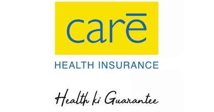
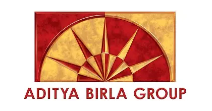
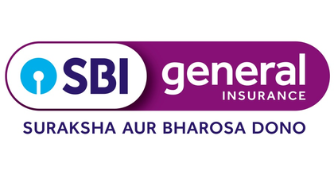
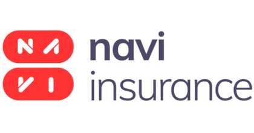
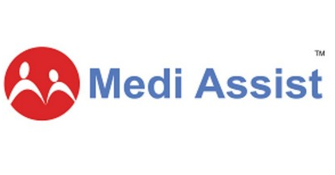
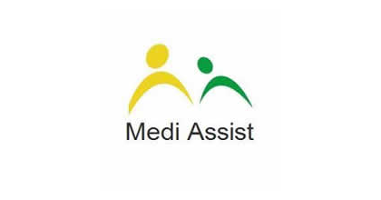
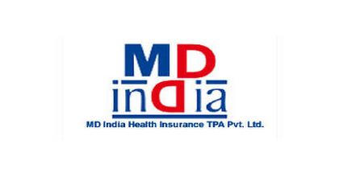


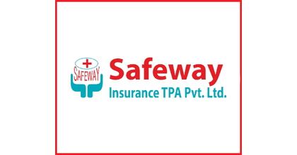
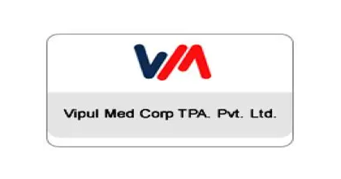

Our team is here to help. Book an appointment on WhatsApp or call us directly — we'll guide you through the next steps.


{kind=link}
{kind=link}